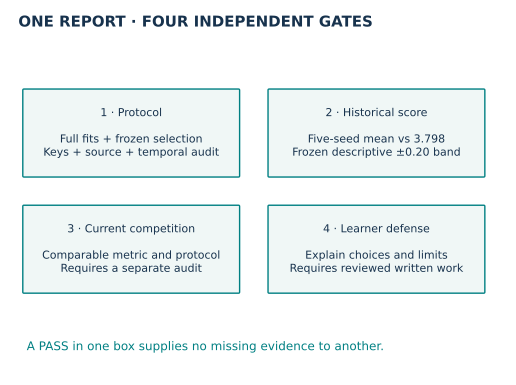
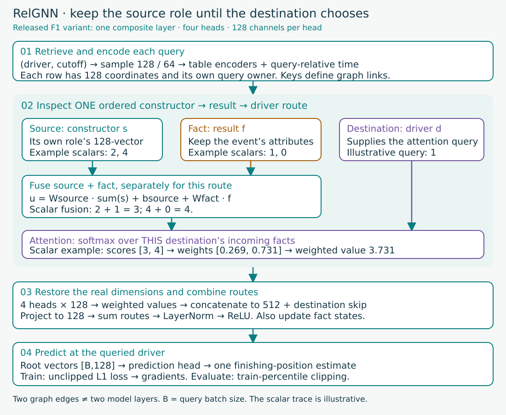
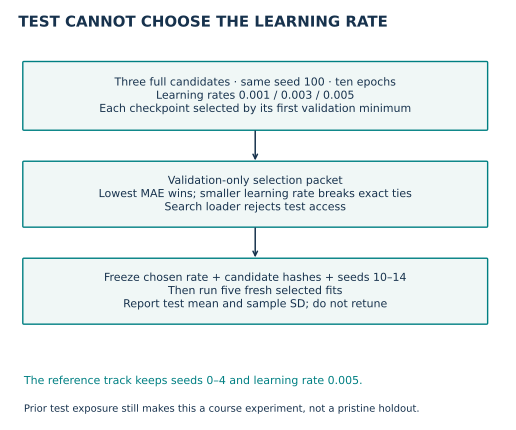
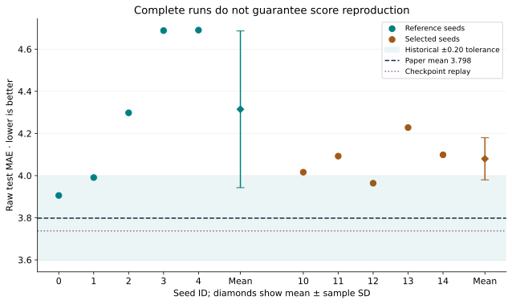

Year 4 · Quarter 3 · Lesson 150
Q3 checkpoint: defend a full reproduction
Your checkpoint: defend one complete RelGNN reproduction, then explain exactly what it establishes. A good score, a runnable notebook and a convincing report are different achievements.
Lesson 143 exposed the distance between loading published weights and recovering a training procedure. Lesson 145 showed why an available implementation can still fail temporal and budget requirements. Lesson 149 made counter-evidence part of the thesis. Now combine those skills into a report another researcher can audit.
Read first: RelGNN v2 §5.2 and Table 2, then the pinned released implementation. The paper reports 3.798 test MAE on rel-f1/driver-position. Our attempt preserves the released architecture, documents unreleased training choices, and evaluates two primary tracks of five fresh fits each, plus three validation-only search fits. The released-checkpoint replay is a separate evaluation.
1 · Retrieval before the checkpoint¶
Close the preceding lessons. Explain why a checkpoint replay is not a fresh seed, why first-minimum validation selection matters when scores tie, and why five seeds do not create five independent databases.
One tangible deliverable: an evidence-backed reproduction report with a manifest, complete seed table, uncertainty statement and written defense. The core lesson explains the gates; the lab supplies the computation and report scaffold. Passing author checks does not pass your checkpoint.
2 · Freeze the claim before running¶
In plain terms. Decide what counts as success before you can see which story the results favor. Otherwise a disappointing training run can quietly become a successful checkpoint replay, or a historical score can quietly become “current SOTA.”
MAE, mean absolute error, is the average absolute distance between predicted and actual finishing position. Lower is better. A seed initializes one stochastic run. A reference reconstruction is a complete training procedure whose missing historical choices are explicitly frozen by the course. It is not a claim that those choices reproduce the authors' private run state.
We distinguish four measured tracks:
| Track | Runs | Purpose | May choose the tuned configuration? |
|---|---|---|---|
| Released checkpoint | One compatibility replay | Test whether released weights and reconstructed feature layout work together | No |
| Reference reconstruction | Five seeds, 0–4 | Reattempt the frozen L143 training recipe | No |
| Validation search | Three learning rates, seed 100 | Choose one declared course configuration | Yes, from validation only |
| Selected course procedure | Five fresh seeds, 10–14 | Measure the chosen configuration across runs | No |
The notebook's extra validation seed 1000 is another execution check. It does not join either primary mean. Search fits are not primary evaluation seeds. Every fit uses all 7,453 training queries and ten complete epochs; validation has 499 queries and test has 760.
Historical score gate: the five-seed mean must be within a frozen ±0.20 MAE of 3.798 to receive CLOSE. This is a descriptive reproduction tolerance. It is not a confidence interval, a significance test, or a definition of current near-SOTA. A better score far outside the band would need explanation too: closeness and predictive quality are different questions.
Current competitive-standing gate: require a separate comparable benchmark audit. The current RelBench leaderboard displays normalized MAE, not the historical raw MAE. The RelArena protocol changes data-state, tuning and final refit rules. We retrieved the live leaderboard data rather than trusting its static “No entries yet” fallback. A numerical comparison without reconciling metric normalization and protocol would be invalid. This checkpoint does not establish current SOTA or near-SOTA.


3 · Trace the model and its information boundary¶
A query is (driver_id, cutoff). The target is mean finishing position in the next 60 days, conditional on the driver participating. Future participation defines which labels exist; this is not an all-driver forecast with a label for every possible query.
The database becomes a graph with one node per row and primary–foreign-key edges. A row encoder converts each table's numerical, categorical, time and text attributes into a 128-channel representation. Relative-time features locate history relative to the owning query. An atomic route connects a source to a destination directly or through a bridge/fact row. RelGNN fuses source and intermediate information, attends over relevant messages, aggregates routes and predicts a scalar driver position.


Read the diagram with one route. A constructor is the team responsible for a car. Its vector and a historical result row’s vector combine before the driver weights incoming messages. In the diagram’s scalar example, source values [2,4] and fact values [1,0] produce messages [3,4]. A driver query of 1 gives weights approximately [0.269,0.731] and a weighted value of 3.731. These illustrate the operation; they are not measured F1 embeddings. In the real model, each of four attention heads produces 128 coordinates; their 512-coordinate concatenation is projected back to 128. Different routes then combine before the driver prediction. Revisit the derivation in Lesson 141.
The selected model has one composite layer, four attention heads and sum aggregation. Two graph sampling hops, 128 then 64 neighbors, expose the composite routes. Batch size is 512; training uses Adam and absolute-error loss. The reference learning rate is 0.005. Evaluation clips predictions to training-label percentiles 2 and 98. The first strict minimum-validation checkpoint is saved; later ties do not replace it. Sampling at final evaluation can yield a validation score different from the selection-time score.
Information ownership: every sampled dated node must be no later than its particular query's cutoff. A batch-wide maximum cutoff would let an earlier query borrow a later query's history. The raw-label audit separately reconstructs all 8,712 targets and query identities. Equal row counts alone would not detect reordered or mismatched queries.
Feature semantics: the released checkpoint expects qualifying.position as numerical, but fresh type inference makes it categorical. The compatibility replay reconstructs that column layout using ordered checkpoint means and standard deviations. Other fresh-training inputs remain unchanged. Matching moments support compatibility; they do not uniquely recover the authors' historical cache.
Scope check. This historical reconstruction fits preprocessing on the released test-cutoff database snapshot, not strictly on training rows. Event-time sampling does not recover missing feature-arrival or mutation histories. Source parity means our implementation agrees with the released computation; it does not establish that all gradients are healthy or that the historical experiment is identified.
4 · Tune without letting test choose¶
Learning rate controls the size of optimizer updates. We search only {0.001, 0.003, 0.005}. Each candidate uses seed 100, the same complete data, ten epochs and the same architecture. Its score is its first minimum validation MAE across epochs. The lowest score wins; smaller learning rate breaks exact ties. This search space was approved before these new results.
Worked example. If candidate validation minima are 3.20, 3.10 and 3.10, select learning rate 0.003. A test score of 3.0 for the 0.005 candidate would not change that selection. The test score should not even be present in the selection packet. Our search loader raises an error if asked for the test split.


A single search seed is a budget choice, not proof of a stable hyperparameter ranking. The five fresh selected seeds measure sensitivity to training randomness after that choice. They do not estimate the uncertainty of running the entire search repeatedly. The reference and selected tracks use different seed sets, so their difference is not a paired-seed intervention estimate.
| Learning rate | First minimum validation MAE |
|---|---|
| 0.001 | 3.856391 |
| 0.003 | 2.968465 |
| 0.005 | 3.309320 |
Frozen winner: 0.003. These are checkpoint-selection scores, not the final resampled validation scores.
A hash is a compact fingerprint computed from file contents. Here it identifies the exact result file used in selection. A frozen selection record stores candidate scores, their file hashes, the chosen rate and final seed IDs. The selected-run operator checks those hashes before launch. Changing a result after freezing makes the operator refuse it. This guards record integrity; it does not retroactively erase the author's exposure to this test population in earlier lessons.
5 · Read the complete evidence packet¶
Before revealing the numbers, predict which is strongest evidence of fresh training: matching one released checkpoint, or collecting every planned seed even if its average misses the paper.
| Track | Validation MAE | Test MAE | Historical score gate |
|---|---|---|---|
| Paper Table 2 | — | 3.798 | Published target |
| Checkpoint replay | 2.836661 | 3.737381 | Separate inference lane |
| Reference, five full fits | 3.101280 ± 0.080420 | 4.314567 ± 0.371880 | OUTSIDE_TOLERANCE |
| Selected, five full fits | 3.186087 ± 0.094588 | 4.079708 ± 0.099947 | OUTSIDE_TOLERANCE |
Mean ± sample SD. All 15,346 predictions across ten primary fits, three validation-only search fits and one replay were independently aligned and rescored. Protocol: PASS · Historical identity: NOT_ESTABLISHED · Current competitive standing: NOT_ESTABLISHED · Whole paper: NOT_RUN · Learner: PENDING_WRITTEN_DEFENSE.
Inspect every primary seed
| Track | Seed | Test MAE |
|---|---|---|
| reference | 0 | 3.905680 |
| reference | 1 | 3.990684 |
| reference | 2 | 4.297924 |
| reference | 3 | 4.688169 |
| reference | 4 | 4.690378 |
| selected | 10 | 4.016070 |
| selected | 11 | 4.092329 |
| selected | 12 | 3.963810 |
| selected | 13 | 4.227917 |
| selected | 14 | 4.098417 |


What the spread means. We report the mean and sample standard deviation (SD) over exactly five runs per primary track. SD describes run-to-run variability here. It is not a confidence interval for all possible F1 queries, all databases or all future training protocols. Five values are too few to make small differences look settled. No post-test retuning is allowed.
A gradient describes how a parameter affects the training loss. Nonfinite gradients contain undefined or infinite values; finite predictions alone cannot establish healthy learning.
What was independently checked: all labels from raw future result rows; all primary and search prediction identities; complete epoch populations; first-validation-minimum checkpoint choices; source-model outputs on the same sampled batches; query-specific temporal bounds; and a separate first-batch gradient comparison. The report retains nonfinite-gradient counts rather than silently repairing the release and still calling it the original procedure.
The independent real first-batch audit matched 640 nonfinite gradient entries, with maximum finite-entry difference 1.2e-07. This supports source agreement on that batch while exposing a gradient-health limitation; it does not establish healthy training.
Use a gate vector, not one green badge. A complete execution can miss its paper-score tolerance. A compatible checkpoint can score well without recovering training. A score can match an old paper while current competitive standing remains unestablished. A fully checked author packet still needs your written defense.
The controls below are illustrative reviewer scenarios, not edits to the measured report. Predict the gate that changes before toggling one input. The measured baseline remains visible.
6 · Submit the report and defend it¶
Student notebook · Prepared notebook · Reference · Protocol · Report template.
Implement three live functions: validation-only candidate selection, complete-track aggregation, and separate evidence gates. The checks reject partial seed sets, checkpoint substitution, test-bearing selection packets and nonfinite scores. Your functions process the real author results. The full reproduction appendix shows the architecture, preprocessing, compatibility helper and trainer inline; its explicit GPU gate can execute the reference, search and selected tracks in a fresh directory.
Report structure¶
- Claim and protocol: exact task, paper version, source/checkpoint/data hashes, model, epochs, optimizer, preprocessing, split, selection and budget.
- Complete results: every reference and selected seed; all three search candidates; checkpoint replay separately; means and sample SD.
- Audit and deviations: key alignment, temporal checks, source parity, gradient health, missing historical details and differing current protocols.
- Verdict: one status per gate. Do not hide a failed score gate behind successful code execution.
- Weakness and next experiment: use L149's counter-evidence. State one change, what stays fixed, a falsifier and a bounded cost. A proposal is not an executed result.
Checkpoint rubric¶
| Dimension | 0 · missing | 1 · partial | 2 · defensible |
|---|---|---|---|
| Reproducible procedure | Recipe absent | Commands without complete identity | Pinned inputs, full runs, executable code |
| Selection and temporal validity | Test leakage or mixed cutoffs | Correct intent, incomplete audit | Frozen selection and query-specific checks |
| Evidence interpretation | Replay, training and SOTA conflated | Some boundaries acknowledged | All tracks and uncertainty separated |
| Counter-evidence | Weakness omitted | Gap reported without falsifier | Concrete limitation and testable next step |
| Written defense | No explanation | Describes outputs only | Explains mechanism, choices and claim limits |
A score of at least 8/10 with no zero is the proposed report-readiness threshold, assessed by the teaching agent after you submit. It does not override a failed competitive-performance requirement. The curriculum's SOTA/near-SOTA objective remains open until supported by a comparable evaluation. A failed reproduction can be an excellent report and still be an unmet performance goal.
EXIT · 250–400 words plus artifacts. Attach your generated checkpoint report and write the defense. Explain why the selected rate won, whether the reference and course tracks met their historical score gates, why the checkpoint replay cannot substitute for either, and what evidence is still needed for current competitive standing. End with one falsifiable next experiment. Learner status remains PENDING_WRITTEN_DEFENSE until reviewed.
Ask the teaching agent about any unclear mechanism or evidence boundary. Revisit the candidate-selection and four-gate questions tomorrow and a week later. Carry this report structure into the Q4 multi-task portfolio, where success must extend beyond one familiar task.
Carry this forward. Take the report structure and Lesson 149’s counter-evidence into the planned Lesson 151 entity-classification portfolio. The next challenge changes the task and metric: rebuild the population and evaluation contract before reusing the pipeline. Completing another F1 fit would not answer that transfer question.